Мы специализируемся на продаже делёнок элитных пионов, выращенных с заботой и вниманием в нашем собственном саду. В нашем ассортименте — только проверенные сорта, крепкие и здоровые растения, которые радуют пышным цветением.
Каждая делёнка проходит тщательный отбор — мы предлагаем только то, что выбрали бы для своего участка. Заказы аккуратно упаковываем и отправляем почтой по всей России.
Для наших покупателей — регулярные акции, подарки и интересные предложения.
Всегда готовы помочь с выбором, проконсультировать по посадке и уходу за пионами.
Присоединяйтесь к сообществу любителей пионов — сделаем ваш сад ярче и красивее вместе!
Каталог
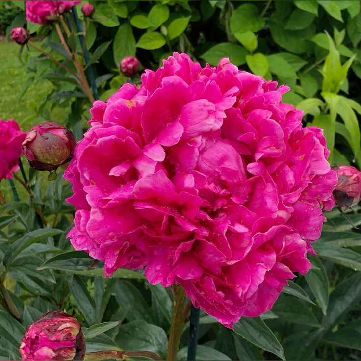
Ренато Розовый
Сорт пиона молочноцветкового (Paeonia lactiflora), известный своими крупными, махровыми цветками насыщенного розово-красного цвета. Цветки этого сорта достигают в диаметре 14-16 см и обладают легким ароматом. Куст "Ренато" компактный, прямостоячий, высотой 60-80 см, с темно-зелеными листьями. Цветение обильное и продолжительное, начинается в начале июня. Сорт морозостойкий и устойчив к заболеваниям.
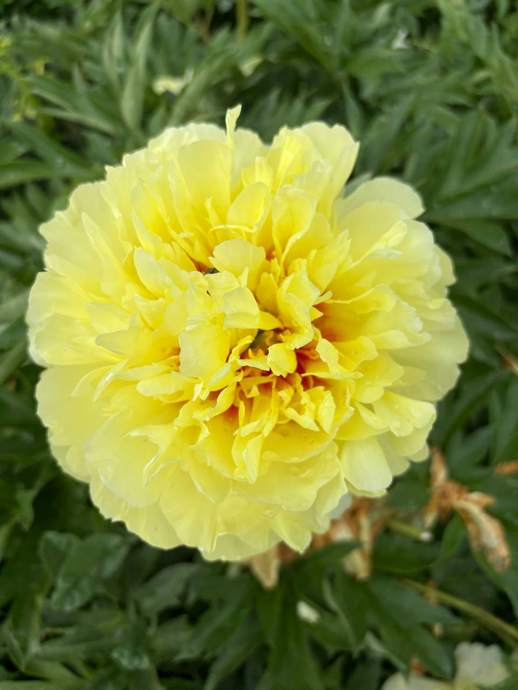
Бартзелла
Гибридный сорт пионов. Раскидистые кусты с прочными стеблями. Листья ажурные, плотные, тёмно-зелёного оттенка. Роскошные жёлтые бутоны, с красными штрихами на основании лепестков дарят тонкий благоухающий аромат. Покупая корневища пиона (Ито-гибрида) Бартзелла, вы получите цветы, которые будут радовать вас шикарными цветами около 4 недель.
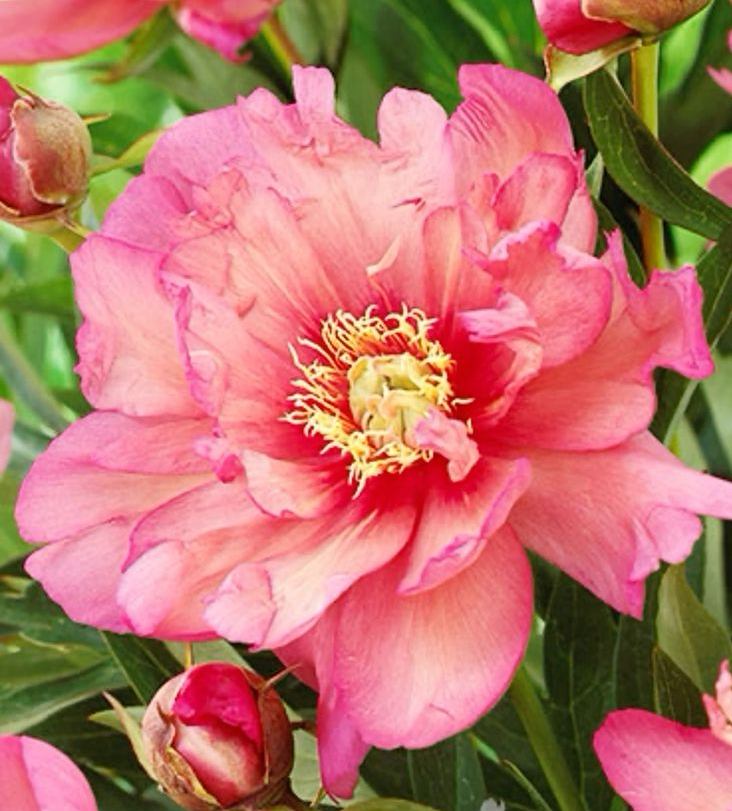
Хиллари
Пион ИТО-гибрид. Полумахровый, ранний сорт, выведенный в США. Его цветки меняют окраску в течение цветения от красноватой до желто-коричневой, с ярко-розовым центром. Сорт отличается прочными стеблями, устойчивым ароматом и высокой зимостойкостью.
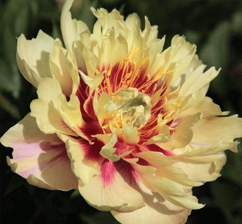
Прейри Чарм
Пион ИТО-гибрид. Это настоящее сокровище для сада, сочетающее в себе лучшие качества травянистых и древовидных пионов. Его роскошные цветки поражают воображение своей красотой и необычной окраской: нежно-лимонные лепестки с ярким малиновым центром создают потрясающий контраст. Крепкие стебли надежно удерживают крупные цветы, которые не поникают даже после дождя. Куст отличается компактностью и аккуратностью, а глянцевая темно-зеленая листва остается декоративной до самой осени. ‘Прейри Чарм’ неприхотлив в уходе, устойчив к болезням и вредителям, а также обладает высокой зимостойкостью. Этот сорт станет настоящим украшением любого сада, привлекая внимание своей изысканной красотой и длительным цветением.
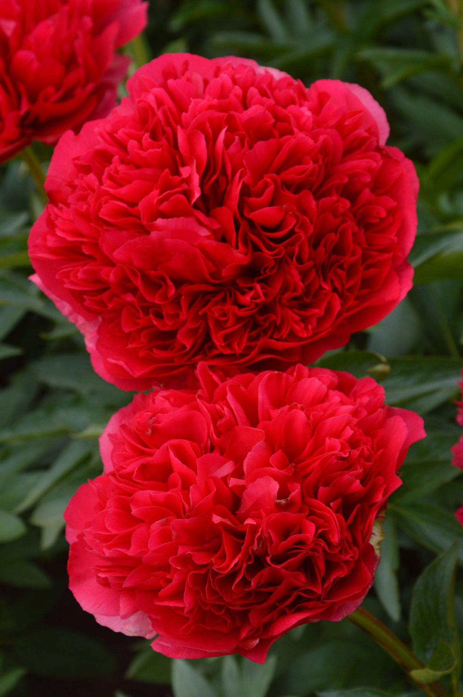
Команд Перфоманс
Популярный сорт молочноцветкового пиона, известный своими крупными, махровыми цветками, которые меняют цвет от красного к розово-оранжевому в процессе цветения. Он отличается прочными стеблями, но иногда они могут изгибаться под тяжестью крупных цветков. Этот сорт хорошо подходит для срезки и эффектно смотрится в саду, как в одиночных, так и в групповых посадках.
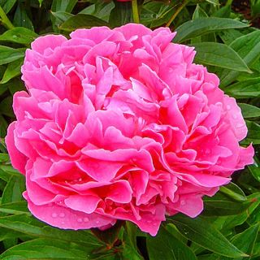
Александр Флеминг
Махровый, розовидный сорт с крупными цветками темно-розового цвета с фиолетовым оттенком, края лепестков светлее. Сорт выведен в Голландии, назван в честь шотландского микробиолога, открывшего пенициллин. Цветки имеют приятный сладковатый аромат, а кусты достигают высоты 80-90 см. Сорт морозостойкий, хорошо адаптируется к разным климатическим условиям.
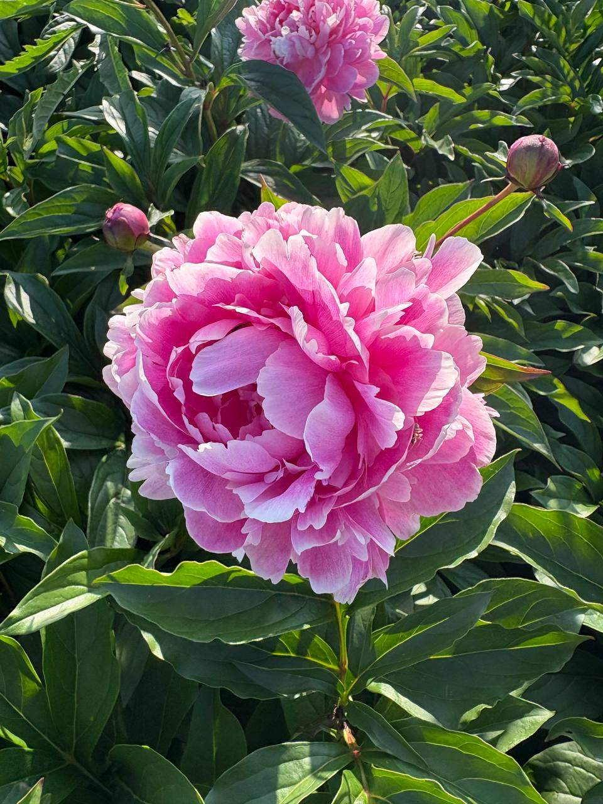
Ядвига
Это сорт молочноцветкового пиона, известный своими крупными, густомахровыми цветками насыщенного розового цвета с серебристым оттенком на кончиках лепестков. Цветы имеют хорошо сформированную бокаловидную форму и приятный аромат. Куст достигает высоты 80-90 см и отличается прочными стеблями, которые хорошо держат крупные цветки.
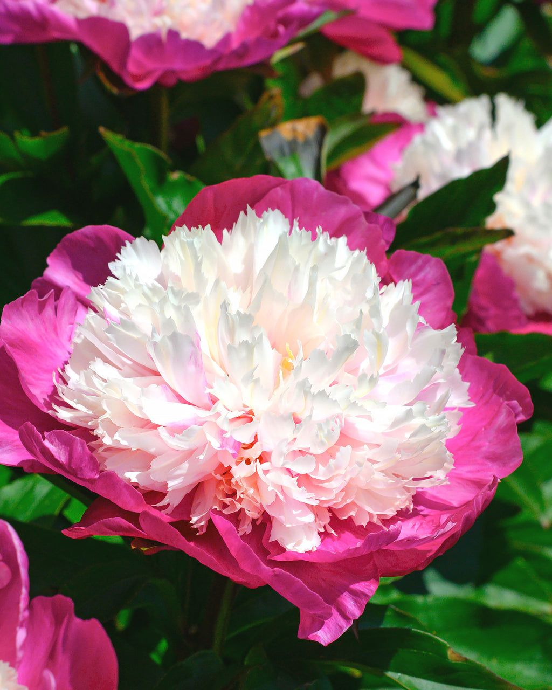
Уайт Кэп
Сорт травянистого пиона, известный своей красотой и неприхотливостью. Он имеет крупные, полумахровые цветки японской формы, с темно-розовыми внешними лепестками и белыми стаминодиями в центре, создающими яркий контраст. Куст достаточно высокий, достигает 80-100 см, с прочными стеблями, и хорошо держит форму. Цветение обильное и продолжительное, в средние сроки, с приятным ароматом. Сорт морозостойкий, засухоустойчивый и устойчив к болезням.
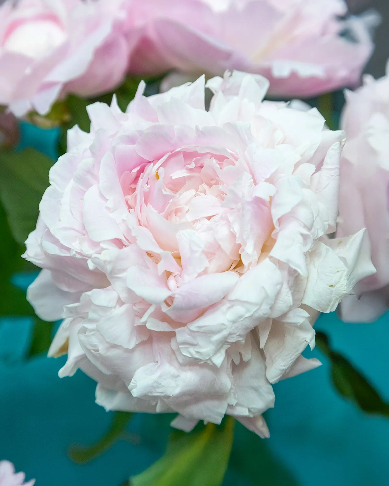
Миртл Джентри
Травянистый пион, известный своим поздним цветением, крупными махровыми цветками розовидной формы и сильным ароматом, напоминающим чайную розу.
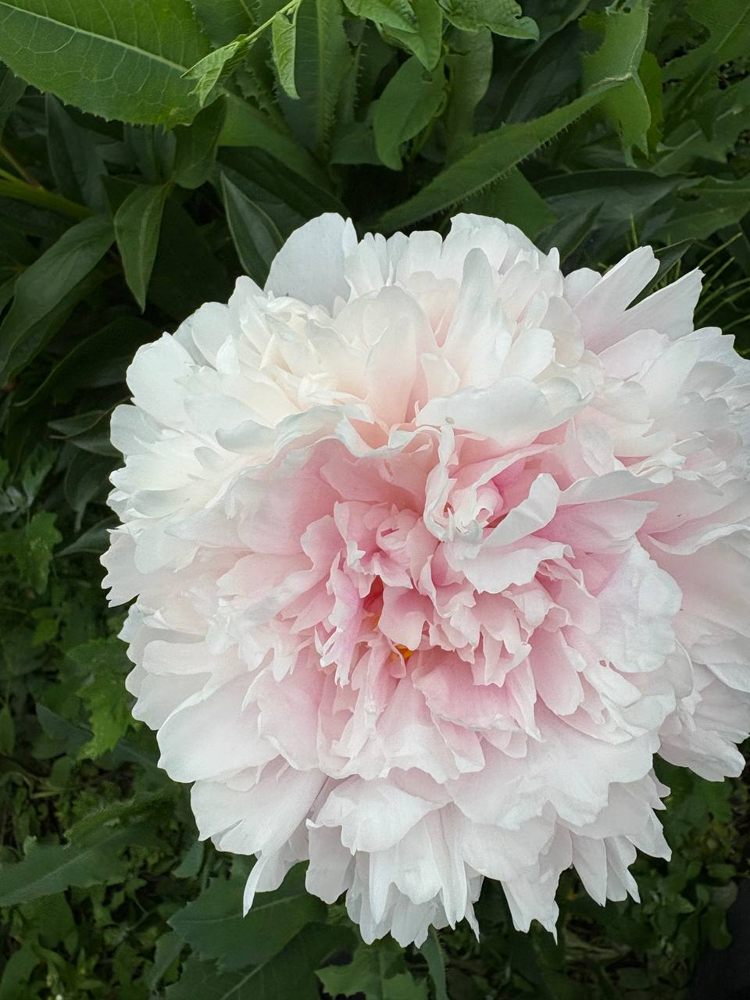
Вог
Сорт травянистого пиона, известный своими крупными, махровыми цветками, которые меняют окраску от розовой с серебристым оттенком до почти белой по мере распускания. Этот сорт отличается обильным цветением, приятным ароматом и относительно высокой устойчивостью к заболеваниям.
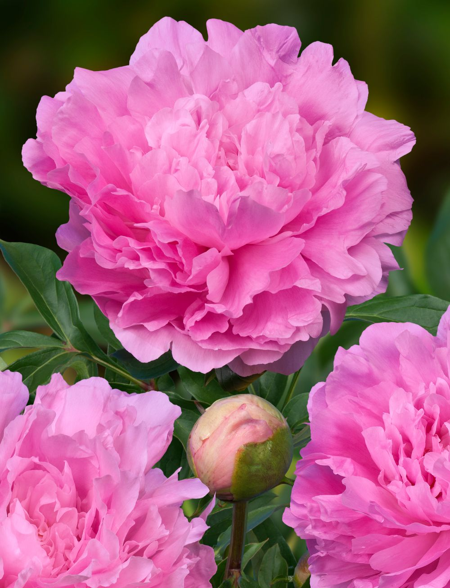
Диннер Плейт
Сорт пиона молочноцветкового, известный своими огромными, махровыми цветами, которые действительно напоминают обеденную тарелку по размеру. Цветы этого сорта розовые, с оттенками лосося и перламутра, а также могут иметь нежные пастельно-розовые тона в конце цветения. Сорт очень популярен благодаря своей красоте и размеру цветков, а также относительной неприхотливости в выращивании.
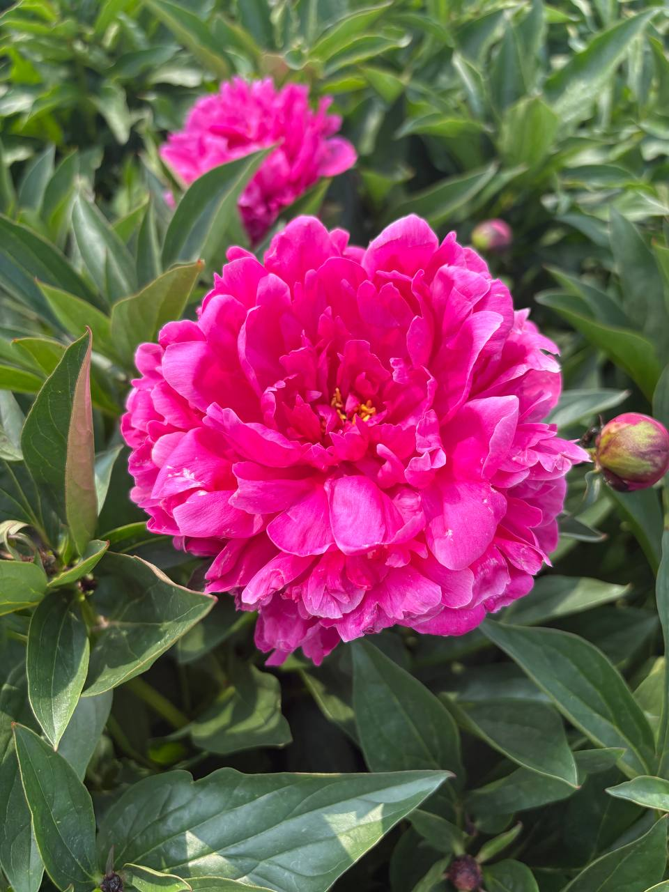
Канзас
Сорт пиона молочноцветкового, известный своими крупными, махровыми, розово-красными цветами, которые часто называют цветами фуксии или карминно-розовыми с сиреневым оттенком. Цветки имеют форму, напоминающую розовидную, и могут достигать до 20 см в диаметре. "Канзас" цветет в период с мая по июнь и обладает приятным ароматом.
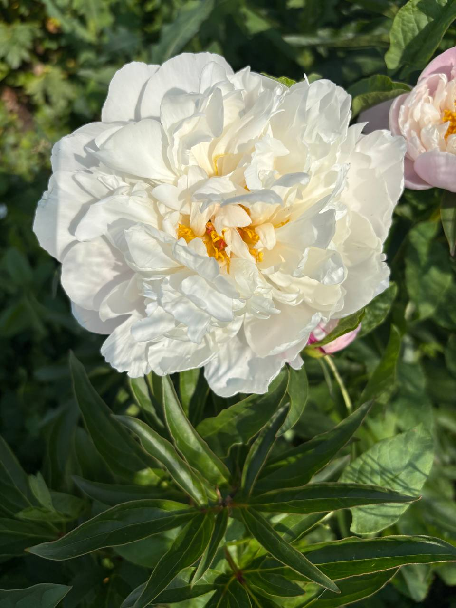
Мисс Америка
Сорт молочноцветкового пиона, известный своими крупными, полумахровыми, белоснежными цветками с яркой желтой сердцевиной. Он отличается ранним и обильным цветением, прочными стеблями и приятным ароматом. Этот сорт морозостоек и засухоустойчив, что делает его подходящим для различных климатических условий.
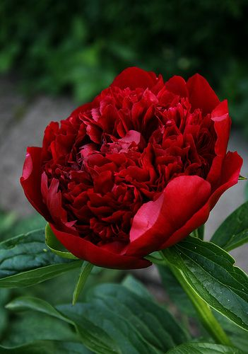
Ред Шарм
Сорт пиона с крупными, махровыми цветками темно-красного или малинового цвета. Он известен своей ранней и продолжительной фазой цветения, которая может длиться до полутора месяцев. Соцветия достигают диаметра до 20 см.
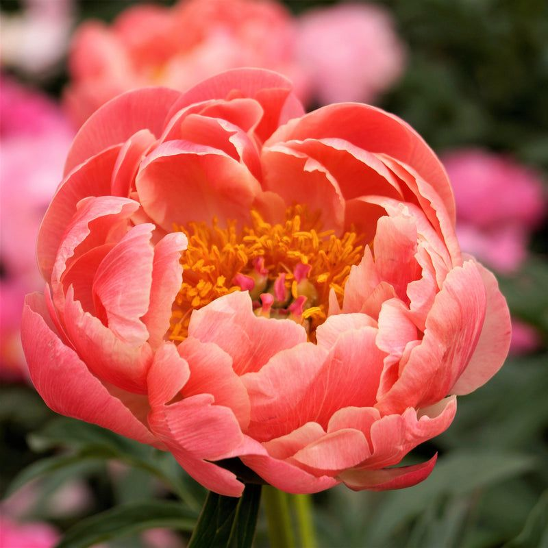
Корал Шарм
Сорт травянистого пиона, известный своими крупными полумахровыми цветками кораллового цвета, которые меняют оттенок по мере распускания. Вначале цветки имеют ярко-лососевый оттенок, затем постепенно переходят в кораллово-персиковый, а в конце цветения могут приобретать кремовый или молочный оттенок. Куст растения достигает высоты 90-100 см, с прочными стеблями и темно-зеленой листвой. "Корал Шарм" относится к среднеранним сортам и отлично подходит для срезки, а также для одиночных и групповых посадок в саду.
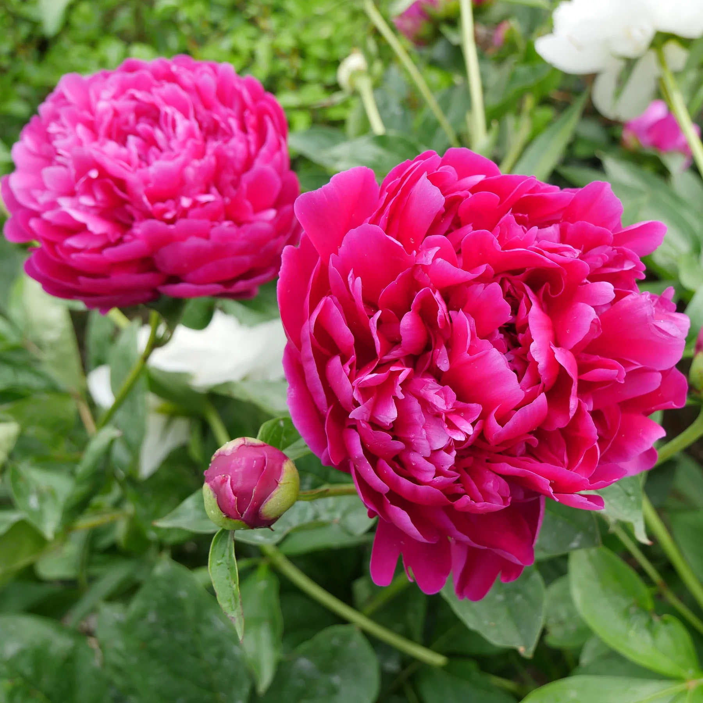
Ред Мэджик
Сорт молочноцветкового пиона, который отличается крупными, махровыми, шаровидными цветками темно-красного, вишнево-красного или клюквенного цвета. Цветки имеют приятный аромат и состоят из множества лепестков, часто с волнистыми краями. Кусты этого пиона достигают высоты 70-90 см, с густой темно-зеленой листвой.
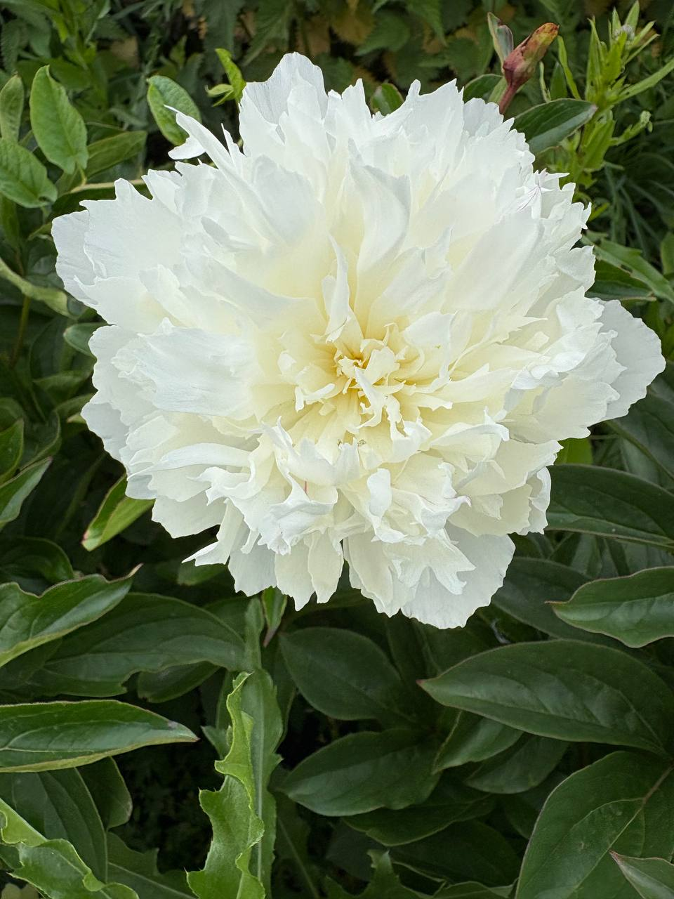
Белый пион
Цветы с крупными, махровыми цветками, чаще всего снежно-белого цвета, но могут иметь и кремовый оттенок в центре. Они славятся своим приятным ароматом и декоративностью, что делает их популярными в садовом дизайне и флористике. Белые пионы символизируют чистоту, невинность и благородство.
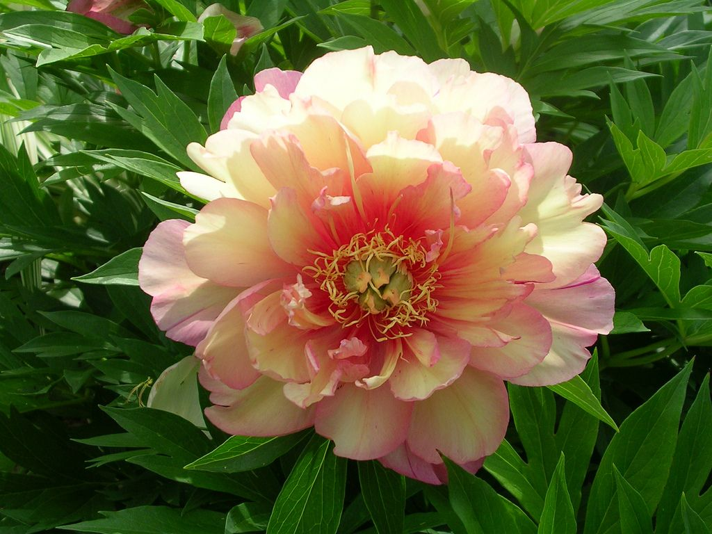
Джулия Роуз
ИТО гибрид — цветки крупные, простые или полумахровые, меняющие окраску от малиново-розовых при роспуске до кремово-жёлтых в конце цветения. Бутоны распускаются не одновременно, поэтому на растении можно наблюдать цветки с разной окраской. Высота куста 90 см. Диаметр цветка до 20 см. Стебли крепкие, прочные. Листья декоративные, темно-зеленые, резные. Период цветения — конец июня.
Новости
Добро пожаловать!
Отзывы
«Милая и дружелюбная хозяйка продаёт прекрасные пионы! Много выбора на любой вкус. Любители пионов оценят данное место и вернутся за новыми видами снова! Рекомендую!
Настоящая политика конфиденциальности определяет порядок обработки и защиты персональных данных, которые могут быть переданы пользователями при использовании контактной информации, размещённой на сайте.
Мы размещаем на сайте контактные данные (имя, номер телефона, email, мессенджеры), которые вы можете использовать для связи с нами. При использовании этих контактов вы добровольно передаёте свои персональные данные напрямую нам или соответствующим мессенджерам.
Мы не собираем персональные данные автоматически, не передаём их третьим лицам и не используем для рассылки рекламы.
Обратите внимание, что при использовании мессенджеров WhatsApp и Telegram ваши данные обрабатываются в соответствии с политиками конфиденциальности этих сервисов, и мы не контролируем их действия с вашими данными.
Вы имеете право отказаться от передачи своих данных и прекратить использование контактных каналов в любое время.